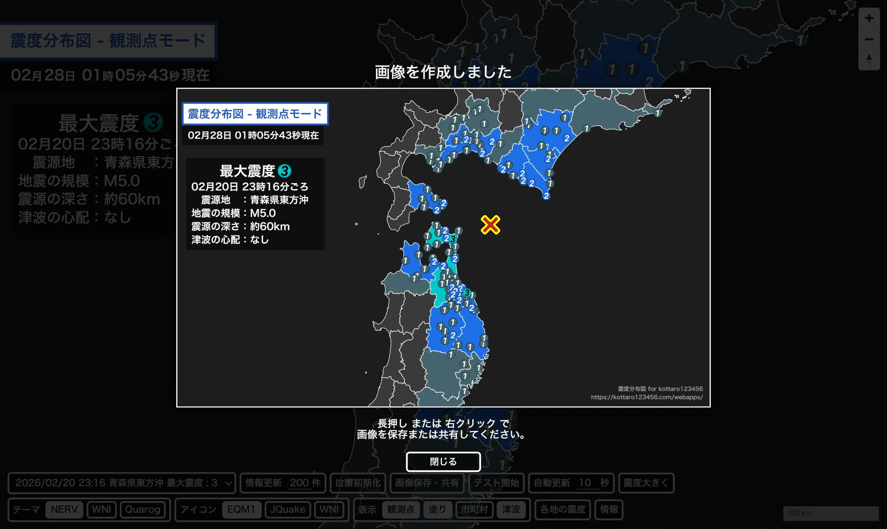
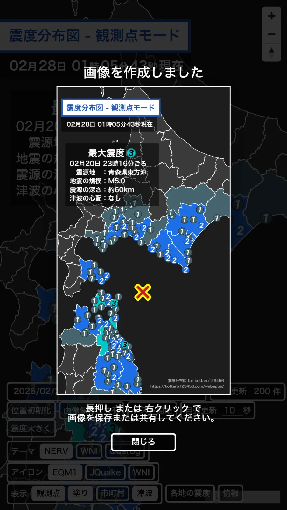

震度分布図アップデートのお知らせ
震度分布図アップデートのお知らせ震度分布図 for kottaro123456 をアップデートしました！
詳細は以下のとおりです。
① レンダーをLeafletからMapLibreへ変更
地図の描画システムを Leaflet から MapLibre へ移行しました。
多数のオブジェクトを表示している地図の拡大・縮小やスクロール時の動作がこれまで以上に滑らかになり、表示速度が大幅に向上しています。また、スマートフォンのブラウザからも、よりストレスなく詳細な地点の確認が可能になりました。
② スクショ機能の搭載
表示されている分布図を画像で保存できる「スクショ機能」を搭載しました。
画面上の操作ボタンなどは含めず、「地図と震度情報だけ」をきれいに切り取れ、スマホなどの小さな画面でも必要な情報だけを大きく画像に残せます。
このスクショ機能は「画像保存・共有」ボタンからご利用いただけます。
SNSでの共有や、記録にぜひご活用ください。


・Tips
スクショ機能は左上のタイトル・地震情報はそのまま、下のボタン類を消去して描画します。
マップは左上のタイトル・地震情報にかぶらないように、ボタン類の下にかぶせながら撮ると、画面を最大限に使ったスクショが撮れます。ぜひお試しを！
このアップデートに伴い、もとのLeaflet版のURLが index.html から leaflet.html に変更となっています。
旧 Leaflet版はこちら からご確認いただけます。
※Leaflet版へのアップデート等更新はいたしません。
また、
津波情報図 for kottaro123456アメダス天気Viewer for kottaro123456
警報注意報Viewer for kottaro123456
等のWebアプリも整い次第LeafletからMapLibreへ移行する予定です。
移行ができましたら、またお知らせを更新いたしますのでよろしくお願いいたします。